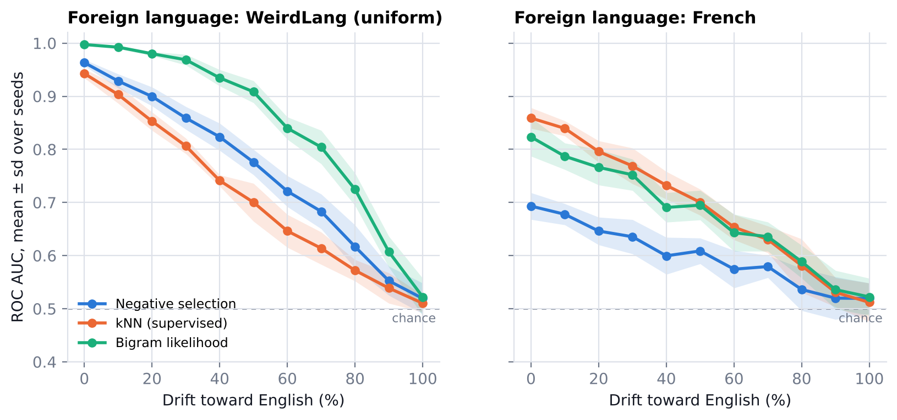
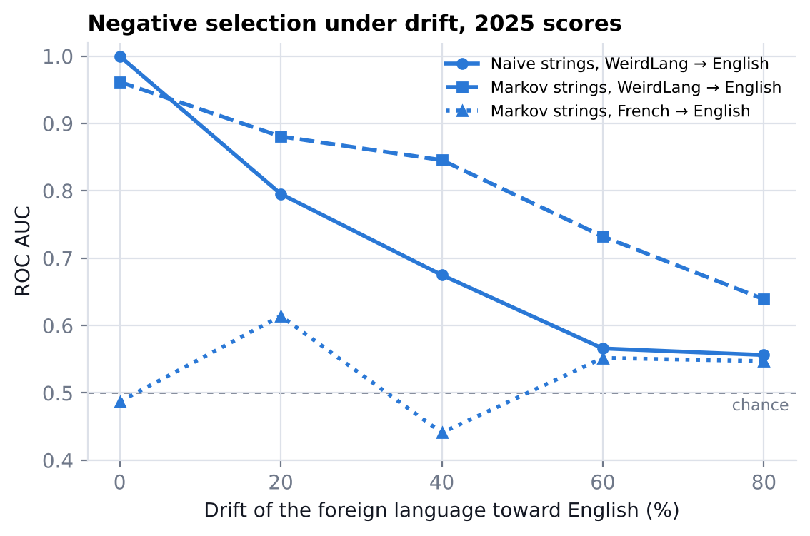
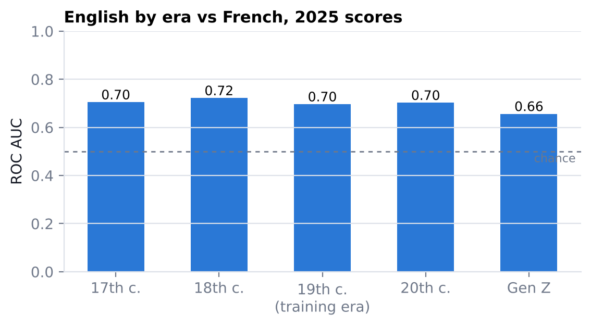

Distribution Shift with Synthetic Language Models
How long can an anomaly detector tell two languages apart while one drifts toward the other?
TL;DR: I model English and a foreign language as Markov chains over 27 characters and slide the foreign one toward English in 10% steps. A 20-line bigram likelihood stays ahead of the immune-inspired negative selection algorithm until both reach chance.

Setup
A language here is a transition matrix: the probability of each character given the one before it. English is estimated from running text. The foreign language is either French or "WeirdLang", where every character is equally likely. Drift is a straight line between the two matrices, so 40% drift has one meaning:
P_t = (1 - t) * P_foreign + t * P_english with t = 0.4
| Detector | Sees in training | Score |
|---|---|---|
| Negative selection, r-contiguous, n = 10, r = 3 | English only | log₂ of the number of detectors that match the string |
| Bigram likelihood | English only | negative log-likelihood under a bigram model of English |
| kNN on character 1–3-gram TF-IDF, k = 3 | English and undrifted foreign strings, with labels | share of foreign neighbours |
Findings
- The simplest one-class model wins. Against WeirdLang, bigram likelihood scores 0.997, 0.935 and 0.725 AUC at 0%, 40% and 80% drift. Negative selection scores 0.963, 0.823 and 0.617.
- Negative selection beats the supervised baseline when the foreign language is far away. On WeirdLang it stays above kNN at every level (0.823 vs 0.741 at 40%), although kNN is the only one shown foreign examples.
- It struggles when the foreign language is a real one. On French it starts at 0.693 where kNN starts at 0.859.
- Two shapes of decay. Negative selection and kNN lose a roughly constant amount of AUC per 10% step. Against WeirdLang, bigram likelihood holds above 0.9 until 50% drift and then falls quickly.
What changed from the 2025 study
The original ran one sample per drift level through Textor's negsel2 Java tool. I replaced the tool with a dynamic programme that counts matching detectors exactly, without generating any. On the 620 strings where both the inputs and the 2025 outputs are on file, the two agree to 7e-15.
That made repeated runs cheap, and the repeats explain an odd result. In 2025 the French curve went 0.49, 0.61, 0.44, 0.55, 0.55 across drift levels. With ten seeds it falls smoothly from 0.69 to 0.52. The zig-zag was sampling noise from single runs of 124 strings.


Limits
- The French matrix is estimated from 4,030 characters of text, the English one from 31,480. Larger corpora would sharpen both.
- Strings are 10 characters long. Longer strings give every detector more evidence, and the ranking may change.
- kNN is trained on undrifted foreign strings, so it is tested on a distribution it never saw. That is the realistic case, but it is a different question from the one the two one-class detectors answer.
In the 2025 project I designed the drift method and wrote the naive and Markov string generators and the negative selection experiments. Taha Khaleel built the kNN baseline, the URL experiments and the ROC plots.